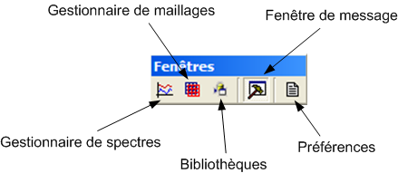

La barre d'outils Fichier reprend une partie des actions disponibles dans le menu Outils :
Il est possible de modifier la visibilité de la fenêtre de messages avec l'avant dernière action de la barre d'outils.
La dernière action permet d'afficher la boîte de dialogue des préférences.